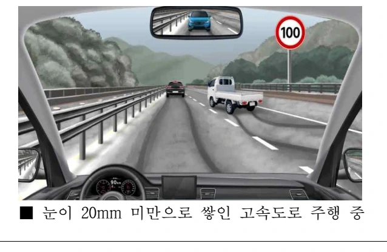

830. 다음과 상황에서 가장 올바른 운전방법 2가지는?

- ①눈이 많이 쌓이지 않았으므로 평소대로 운전한다.
- ②화물차가 눈길에 미끄러져 회전할 수 있으므로 이에 대비한다.
- ③최고 속도의 100분의 10을 줄인 속도로 운행한다.
- ④비상점멸등을 작동시키며 서행한다.
- ⑤지그재그 운전으로 속도를 줄인다.
정답 보기
정답
② 화물차가 눈길에 미끄러져 회전할 수 있으므로 이에 대비한다.
④ 비상점멸등을 작동시키며 서행한다.
근거·해설
기상상황에 따라 감속규정을 적용한다. 최고속도의 100분의 20을 줄인 속도로 운행하여야 하는 경우는 비가 내려 노면이 젖어있는 경우, 눈이 20밀리미터 미만 쌓인 경우이고, 최고속도의 100분의 50을 줄인 속도로 운행하여야 하는 경우는 폭우ㆍ폭설ㆍ안개 등으로 가시거리가 100미터 이내인 경우, 노면이 얼어 붙은 경우, 눈이 20밀리미터 이상 쌓인 경우이다(도로교통법 시행규칙 제19조 제2항).